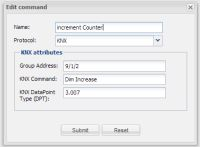
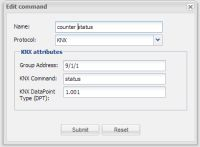

Hi, im new in open remote.
Sorry for my basic questions...
Im using KNX and i tried to create a toggle button and a status for that button to show how many times the button was pressed in the open design.
I already can switch light on e off, see the status of the sensor temperature.
I try to use knx command: dim increase in KNX DPT 3.007 and then read the status in DPT 1.001 but i receive the anwser ON and not a number
Can someone help me please??? thank you for your help
{kind=link}
{kind=link}
|
Hi and welcome, Sounds like you are using a switch sensor to read the status from the KNX. Try a custom sensor for debugging with a label widget and this will display whatever is returned from the read command. Rich |
|
Hi Richard, thank you for your help. Sorry to ask for more help again. I have a command INCREMENT COUNTER  and i have another command COUNTER STATUS  and i create a custom sensor like you suggest but don't work. Can you tell me what i have to put in "name" and "value" of the custom sensor? And what i'm doing wrong? Sorry for this basic questions. |
|
I believe your KNX command to read the dimmer value will be a 1-byte DPT (5.001). For the custom sensor you can leave the name value pairs empty (this is there to map between values received and values you actually want to be output from the sensor), the problem you have is your read command. Once you have the label updating you should be able to change to use a level sensor and this can be linked to a slider. Useful forum thread about dimming (skip past the German discussion at the top): - http://www.openremote.org/pages/viewpage.action?pageId=18972676 Here is the KNX implementation info: - http://www.openremote.org/display/docs/Designer+2.0+-+Create+KNX+Write+Command Rich |
|
Hi Rich, thanks so much for your help. i already have read the value with command status in DPT 5.001 but the value represent percentage (%) not the number of click's. How can i do it? thank's again |
|
I have the solution, i change status for DPT 5.010 |
|
Luis, Glad to hear you found a solution! Rich |
{kind=link}
{kind=link}